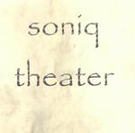

| Artist: | Soniq Theater |
| Title: | Soniq Theater |
| Label: | selfproduced |
| Length(s): | 69 minutes |
| Year(s) of release: | 2000 |
| Month of review: | [04/2001] |
| 2) | Unicorn | 3.46 |
| 3) | Pandora's Box | 4.24 |
| 4) | Minka E Rano | 2.23 |
| 5) | Excalibur | 4.27 |
| 6) | Jurassic Classic | 2.34 |
| 8) | Tsunami | 5.05 |
| 9) | Palace Of Glass | 2.19 |
| 10) | Laughing Through My Tears | 3.40 |
| 12) | Hydra | 4.19 |
| 13) | Crying Sky | 4.04 |
| 14) | The Riders Of Rohan | 7.00 |
| 15) | Cinemagic | 6.17 |
| 16) | Dans Les Nuages | 5.03 |
Soniq Theater Formerly of Rachel's Birthday, keyboardist Alfred Müller now has a project of his own. You can order the disc only from him directly at the moment.
Unicorn continues the line of u-tempo keyboarddominated progressive that was partly introduced on the previous track. Alfred tries to put a lot of swing into his music and for a solo artist I think he succeeds quite well. The piano melody is also quite nice. It is followed by a freaky organ part.
A bit of Flower kings we hear in the mellotrons of Pandora's Box. This mellower part follows the rhythmically involved opening. Some nice strings there as well, and although the music is very fluent and romantic almost, there also some more urgents and dissonant parts keeping the music interesting. Quite intense and intensively wrought uptempo instrumental symphonic rock.
The short Minka E Rano is next. Sampled world like vocals, heavy guitars and solo's on the keyboards make up this one, on a rather discordant rhythm. Different. Nolanish keyboards, strong themes and quite a (automated) percussive approach make up Excalibur. The rhythm guitars indicate progmetal, but this is a quirky track on a bouncy rhythm. The middle part is maybe a bit too mellow, but the theme is nice.
Jurassic Classic is another short one. A rather involved and loud track which is followed by the accessible neo-progressive (almost AOR) of The Power And The Glory. However, it is not all just that, because Alfred does put in a lot of variation. The rhythms are a bit heavy handed and monotonous, while the keyboards pipe and squeak. Pomp progressive with a moody interlude followed by marching rhythms.
The Chinese sounding Palace Of Glass follows Tsunami. This one is followed by the modern rhtyhms of Laughing Through My Tears, which combines piano with funky percussion and inserts also some heavy guitars. Not that great.
Leftoverture is a very nice bombastic interlude in classical style. Very orchestral. Hydra is not very special though. Lots of keyboards of course, but it kind of goes on a bit. The same holds also for Crying sky although it opens very nicely. The keyboard run on this track sounds familiar from earlier on, or is it previous listens.
With The Rides Of Rohan we return to pomp progressive based mostly on keyboards, but also featuring some discordant guitar work. Some nice interludes with acoustic guitar, in fact this is one of those varied tracks again. Plenty of different passages, quite a bit of bombast and pomp in there.
Stringlike sounds and a few female vocals we find in the rocky Cinemagic. Energetic progressive that goes on and on. The song sounds a bit like a kind of song that is stretched in a live version. Some of the interludes sound a bit classical in structure. Some keyboard parts are a bit cheesy though, like from a comic.
The final track, yep number 16, is the dreamy Dans Les Nuages. However, the music becomes more involved later on with a nice theme on the keyboards. One of the more striking melodies does sound familiar.